Candidate List 20260615 Previous Day Next Day Section 1: New Sources (age<1d) Cosmological Afterglow
Section 2: Old (1-5d) sources observed last night placeholder
Section 1: New Afterglow/FBOT Cands Last Night (2)
1. ZTF26abbzzmm (FBOT?) [Back to Top] [Share] [Trigger Swift] [Fritz ] [Lasair ]RA, Dec: 268.47983, 17.78186 17h53m55.16s, 17d46m54.71sGalactic (l, b): 43.01156, 20.47021 ext(g-r) = 0.086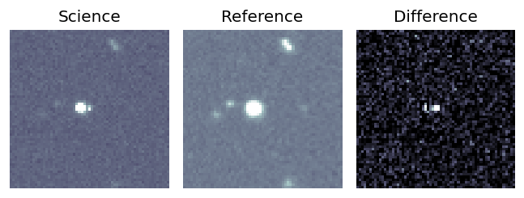
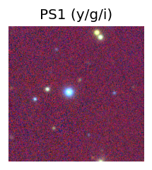
LegacySurvey: 1 sources in 3 arcsec Closest: d = 3.69 arcsec, 85.5 deg (east of north) photoz=0.23 (68% bounds 0.06, 0.52), type=PSF peak abs mag = -20.62 (68% bounds -17.53, -22.71) 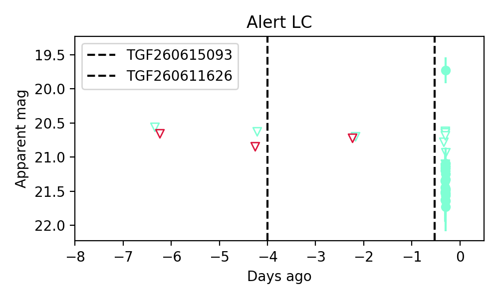
2. ZTF26abcaeaz (FBOT?) [Back to Top] [Share] [Trigger Swift] [Fritz ] [Lasair ]RA, Dec: 265.48331, 15.62449 17h41m55.99s, 15d37m28.16sGalactic (l, b): 39.66807, 22.25805 ext(g-r) = 0.087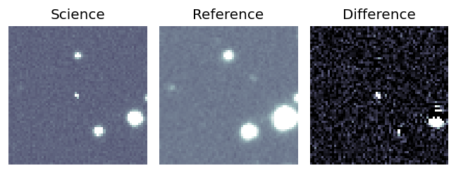
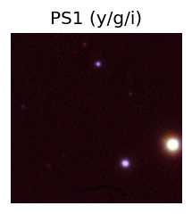
LegacySurvey: 1 sources in 3 arcsec Closest: d = 0.53 arcsec, 352.0 deg (east of north) photoz=0.88 (68% bounds 0.57, 1.32), type=PSF peak abs mag = -24.44 (68% bounds -23.29, -25.53) 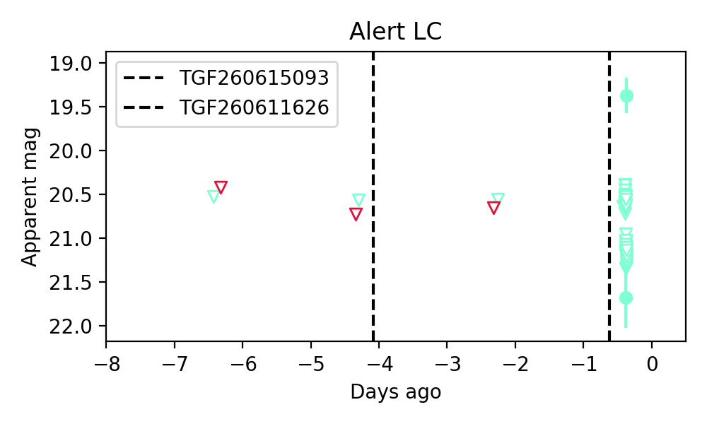
Section 2: Older Sources Observed Last Night (18)
0. ZTF26abaoqgh (Afterglow?) [Back to Top] [Share] [Trigger Swift] [Fritz ] [Lasair ]RA, Dec: 288.42301, -4.14632 19h13m41.52s, -4d-8m-46.77sGalactic (l, b): 31.76284, -6.83597 ext(g-r) = 0.714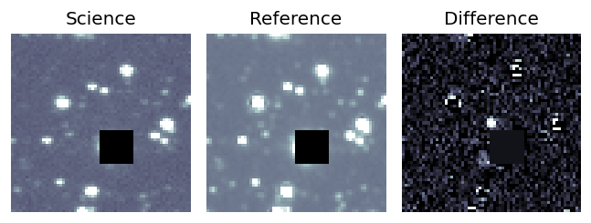
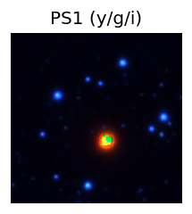
PS1: 1 source in 3 arcsec Closest: d = 1.92 arcsec photoz=0.41+/-0.09 peak abs mag = -23.92 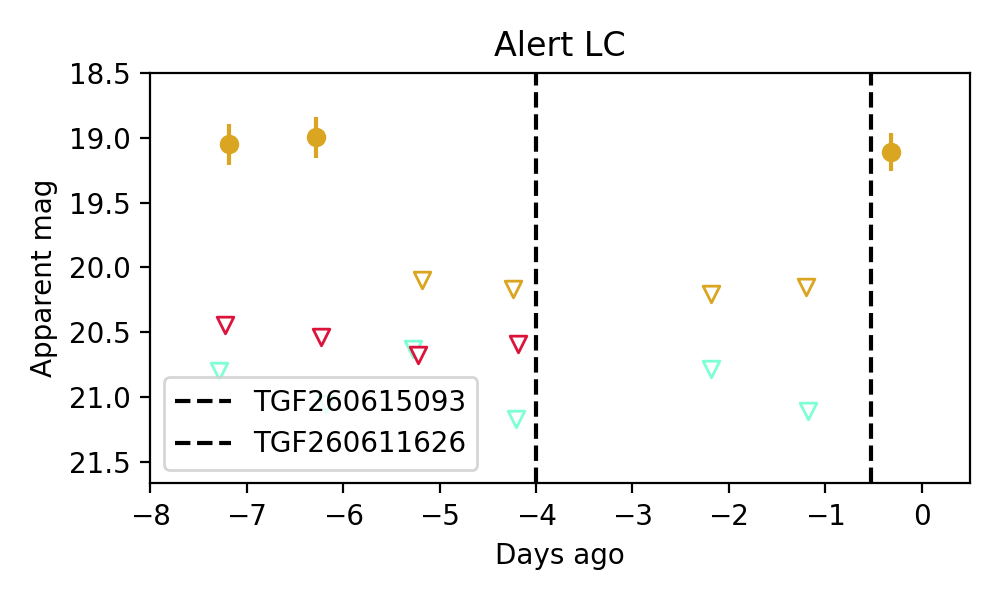
1. ZTF26abasxfg (Afterglow?) [Back to Top] [Share] [Trigger Swift] [Fritz ] [Lasair ]RA, Dec: 347.37835, 32.67826 23h 9m30.80s, 32d40m41.72sGalactic (l, b): 99.28475, -25.47092 ext(g-r) = 0.07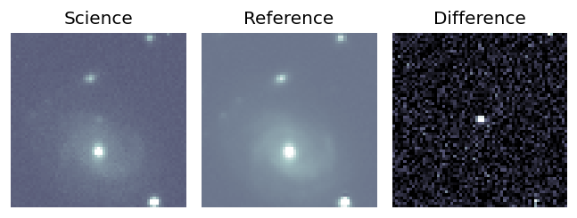
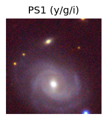
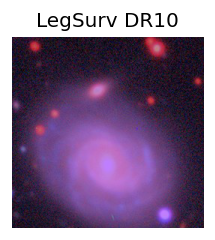
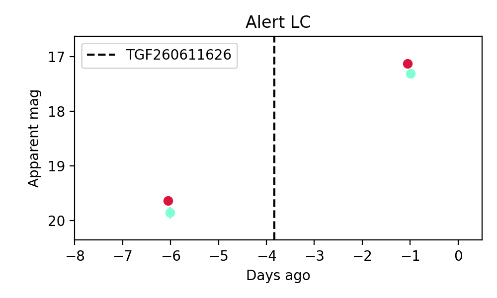
Consistent with synchrotron, g-r>0!
2. ZTF26abatjrk (Afterglow?) [Back to Top] [Share] [Trigger Swift] [Fritz ] [Lasair ]RA, Dec: 333.11822, -5.69258 22h12m28.37s, -5d-41m-33.30sGalactic (l, b): 55.20912, -46.56889 ext(g-r) = 0.075peak abs mag = -18.04 LegacySurvey: 1 sources in 3 arcsec Closest: d = 0.42 arcsec, 221.9 deg (east of north) photoz=0.02 (68% bounds 0.01, 0.03), type=SER peak abs mag = -15.51 (68% bounds -14.58, -16.33)
3. ZTF26abaufnq (FBOT?) [Back to Top] [Share] [Trigger Swift] [Fritz ] [Lasair ]RA, Dec: 147.86945, 41.88411 9h51m28.67s, 41d53m2.81sGalactic (l, b): 179.00198, 50.62698 ext(g-r) = 0.014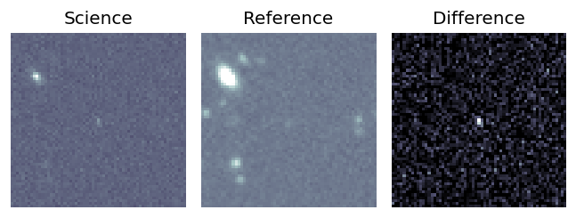
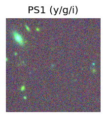
peak abs mag = -23.54 LegacySurvey: 1 sources in 3 arcsec Closest: d = 0.73 arcsec, 151.6 deg (east of north) photoz=0.05 (68% bounds 0.01, 0.29), type=EXP peak abs mag = -17.73 (68% bounds -14.83, -21.84) 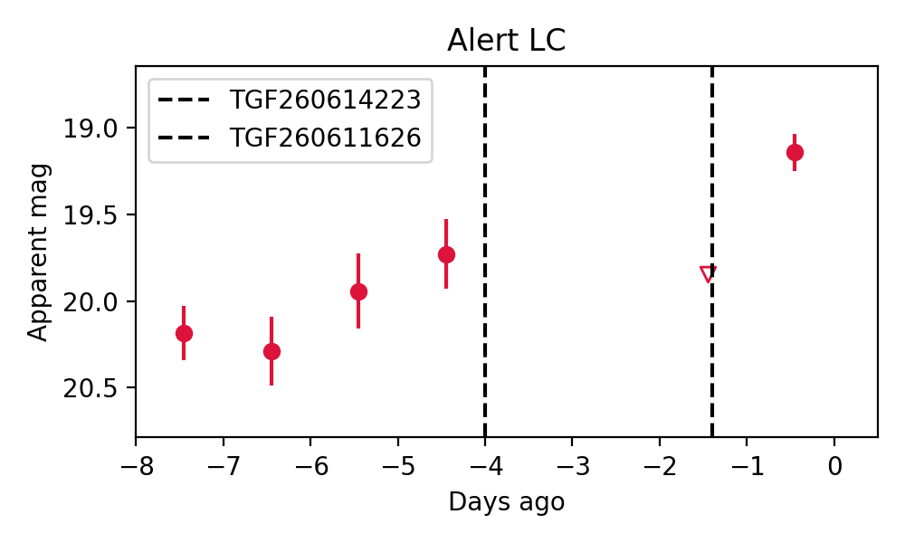
4. ZTF26abauikj (Afterglow?FBOT?) [Back to Top] [Share] [Trigger Swift] [Fritz ] [Lasair ]RA, Dec: 151.07413, 10.79127 10h 4m17.79s, 10d47m28.58sGalactic (l, b): 227.27394, 47.49814 WARNING: -0.99 deg from ecliptic plane ext(g-r) = 0.038LegacySurvey: 1 sources in 3 arcsec Closest: d = 1.93 arcsec, 171.2 deg (east of north) photoz=0.43 (68% bounds 0.08, 0.71), type=EXP peak abs mag = -24.14 (68% bounds -20.12, -25.43)
5. ZTF26abaxclj (Afterglow?) [Back to Top] [Share] [Trigger Swift] [Fritz ] [Lasair ]RA, Dec: 238.97156, -16.39382 15h55m53.17s, -16d-23m-37.77sGalactic (l, b): 354.20497, 27.59407 WARNING: 3.9 deg from ecliptic plane ext(g-r) = 0.299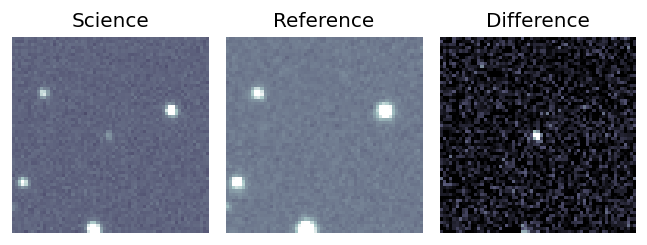
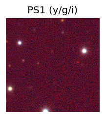
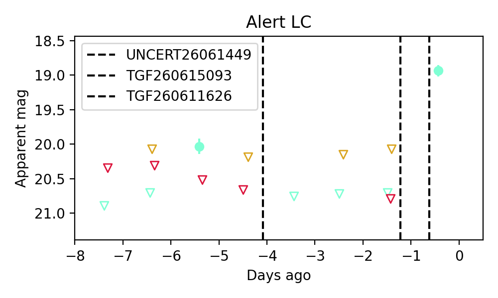
6. ZTF26abaxqjy (Afterglow?) [Back to Top] [Share] [Trigger Swift] [Fritz ] [Lasair ]RA, Dec: 255.89227, -10.11755 17h 3m34.15s, -10d-7m-3.18sGalactic (l, b): 10.62878, 18.49453 ext(g-r) = 0.465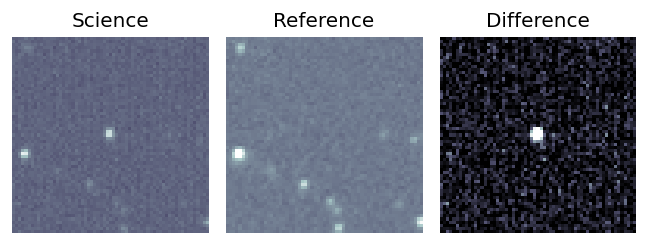
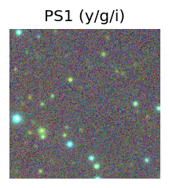
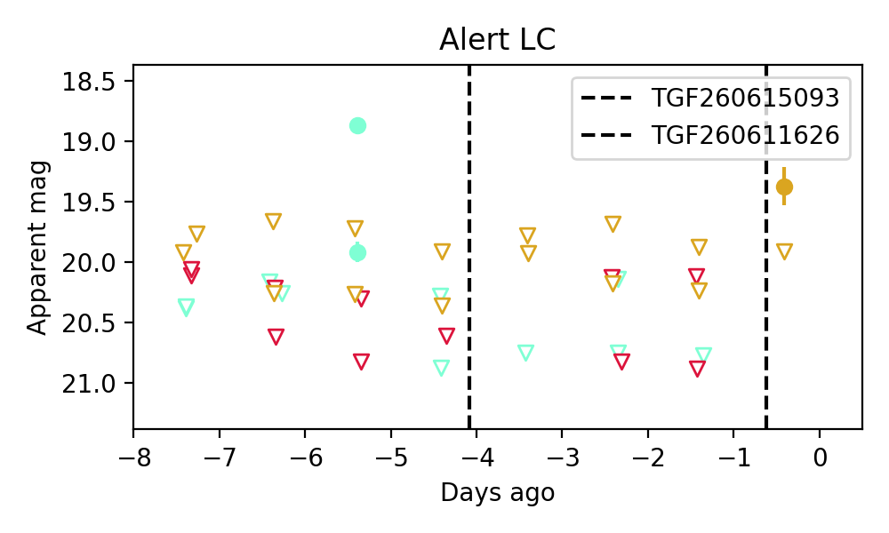
7. ZTF26abbceze (Afterglow?) [Back to Top] [Share] [Trigger Swift] [Fritz ] [Lasair ]RA, Dec: 236.32538, 39.19883 15h45m18.09s, 39d11m55.78sGalactic (l, b): 62.78856, 52.07007 ext(g-r) = 0.015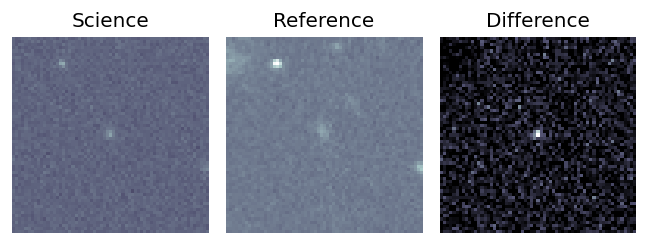
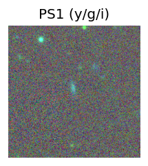
peak abs mag = -18.01 LegacySurvey: 1 sources in 3 arcsec Closest: d = 1.28 arcsec, 33.9 deg (east of north) photoz=0.08 (68% bounds 0.04, 0.11), type=EXP peak abs mag = -17.93 (68% bounds -16.42, -18.77) 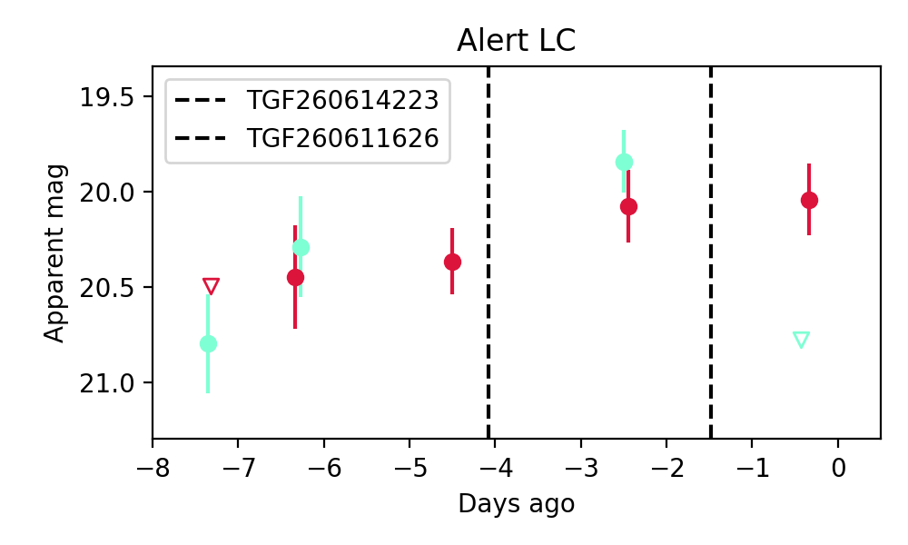
8. ZTF26abbkufc (FBOT?) [Back to Top] [Share] [Trigger Swift] [Fritz ] [Lasair ]RA, Dec: 212.52168, 0.58456 14h10m5.20s, 0d35m4.42sGalactic (l, b): 341.61012, 57.42674 ext(g-r) = 0.039peak abs mag = -19.95 LegacySurvey: 1 sources in 3 arcsec Closest: d = 0.46 arcsec, 172.6 deg (east of north) photoz=0.12 (68% bounds 0.1, 0.15), type=REX peak abs mag = -19.02 (68% bounds -18.58, -19.6) Consistent with synchrotron, g-r>0!
9. ZTF26abbloxx (Afterglow?) [Back to Top] [Share] [Trigger Swift] [Fritz ] [Lasair ]RA, Dec: 228.94015, 2.94607 15h15m45.64s, 2d56m45.85sGalactic (l, b): 4.21005, 47.88184 ext(g-r) = 0.051peak abs mag = -19.02 LegacySurvey: 1 sources in 3 arcsec Closest: d = 2.99 arcsec, 56.1 deg (east of north) photoz=1.28 (68% bounds 0.2, 2.44), type=DEV peak abs mag = -25.03 (68% bounds -20.19, -26.74) Consistent with synchrotron, g-r>0!
10. ZTF26abblqfy (Afterglow?) [Back to Top] [Share] [Trigger Swift] [Fritz ] [Lasair ]RA, Dec: 243.79434, 42.68999 16h15m10.64s, 42d41m23.96sGalactic (l, b): 67.43099, 46.17283 ext(g-r) = 0.017peak abs mag = -17.86 peak abs mag = -17.86 LegacySurvey: 1 sources in 3 arcsec Closest: d = 5.65 arcsec, 69.1 deg (east of north) photoz=0.05 (68% bounds 0.04, 0.06), type=SER peak abs mag = -17.38 (68% bounds -16.78, -17.91) Consistent with synchrotron, g-r>0!
11. ZTF26abbovkv (Afterglow?) [Back to Top] [Share] [Trigger Swift] [Fritz ] [Lasair ]RA, Dec: 34.71046, 22.01577 2h18m50.51s, 22d 0m56.77sGalactic (l, b): 148.35322, -36.50417 ext(g-r) = 0.124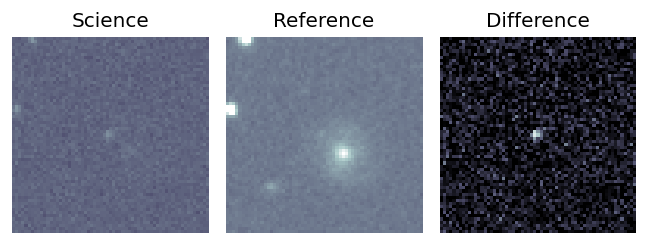
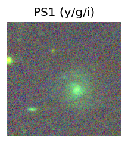
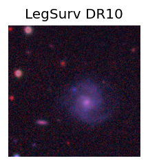
peak abs mag = -19.91 LegacySurvey: 1 sources in 3 arcsec Closest: d = 0.45 arcsec, 350.9 deg (east of north) photoz=0.03 (68% bounds 0.02, 0.15), type=SER peak abs mag = -17.53 (68% bounds -16.23, -20.91) 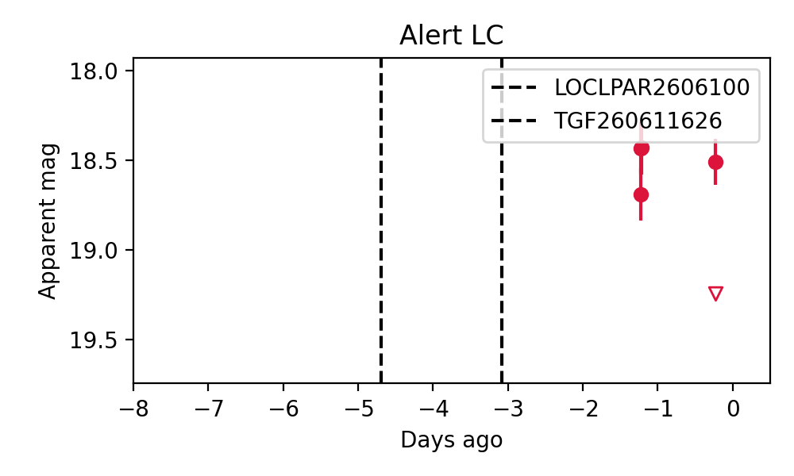
12. ZTF26abbwuqn (FBOT?) [Back to Top] [Share] [Trigger Swift] [Fritz ] [Lasair ]RA, Dec: 14.0342, 5.67372 0h56m8.21s, 5d40m25.40sGalactic (l, b): 125.08896, -57.17834 WARNING: -0.3 deg from ecliptic plane ext(g-r) = 0.033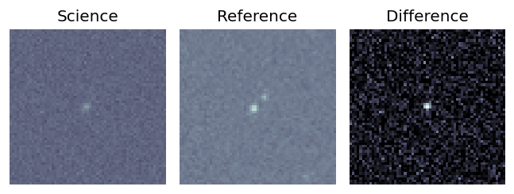
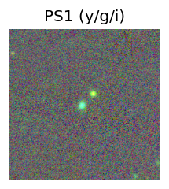
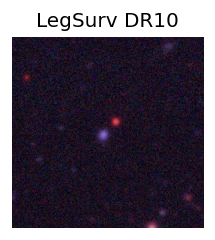
peak abs mag = -20.54 LegacySurvey: 1 sources in 3 arcsec Closest: d = 1.91 arcsec, 122.3 deg (east of north) photoz=0.15 (68% bounds 0.13, 0.17), type=REX peak abs mag = -19.57 (68% bounds -19.23, -19.92) 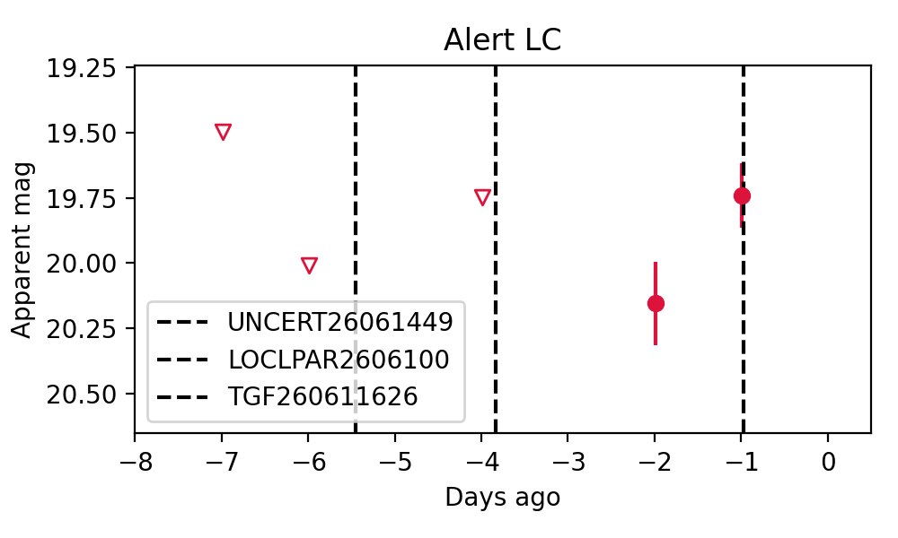
13. ZTF26abbyejl (FBOT?) [Back to Top] [Share] [Trigger Swift] [Fritz ] [Lasair ]RA, Dec: 203.92677, 4.81752 13h35m42.42s, 4d49m3.06sGalactic (l, b): 330.1958, 65.31883 ext(g-r) = 0.03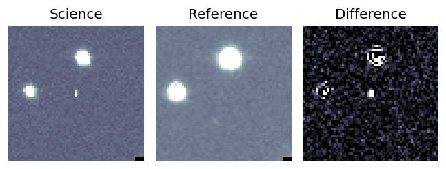
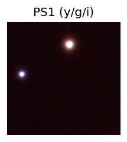
peak abs mag = -21.75 LegacySurvey: 1 sources in 3 arcsec Closest: d = 1.20 arcsec, 138.9 deg (east of north) photoz=0.88 (68% bounds 0.62, 1.13), type=EXP peak abs mag = -24.8 (68% bounds -23.87, -25.46) 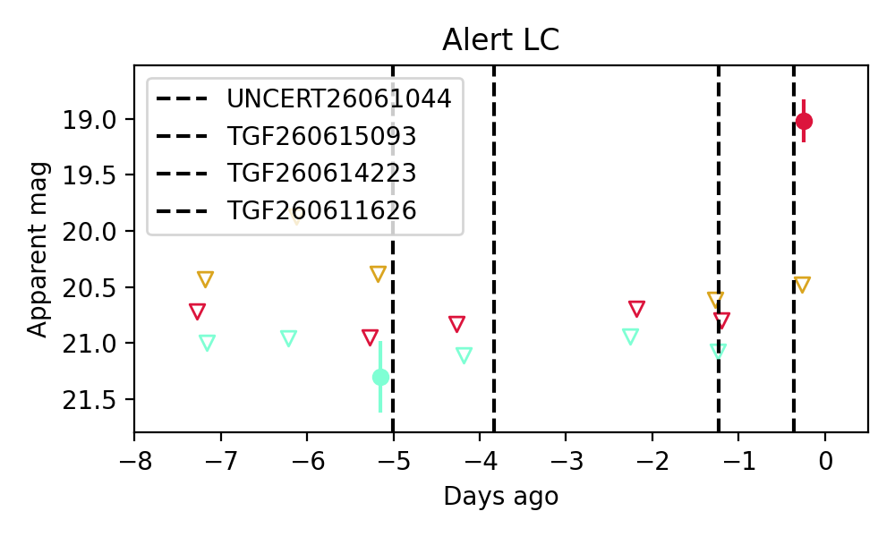
14. ZTF26abbzdgn (FBOT?) [Back to Top] [Share] [Trigger Swift] [Fritz ] [Lasair ]RA, Dec: 249.50621, -20.62818 16h38m1.49s, -20d-37m-41.43sGalactic (l, b): 357.89315, 17.29547 WARNING: 1.46 deg from ecliptic plane ext(g-r) = 0.48PS1: 1 source in 3 arcsec Closest: d = 3.71 arcsec photoz=0.11+/-0.01 peak abs mag = -20.37
15. ZTF26abbzhve (Afterglow?) [Back to Top] [Share] [Trigger Swift] [Fritz ] [Lasair ]RA, Dec: 265.41911, 45.68633 17h41m40.59s, 45d41m10.77sGalactic (l, b): 72.01696, 30.83783 ext(g-r) = 0.028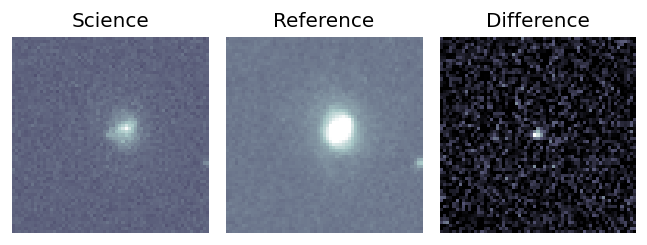
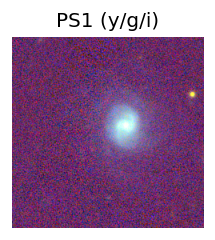
peak abs mag = -16.68 LegacySurvey: 1 sources in 3 arcsec Closest: d = 5.58 arcsec, 289.4 deg (east of north) photoz=0.06 (68% bounds 0.04, 0.07), type=SER peak abs mag = -16.77 (68% bounds -16.08, -17.08) 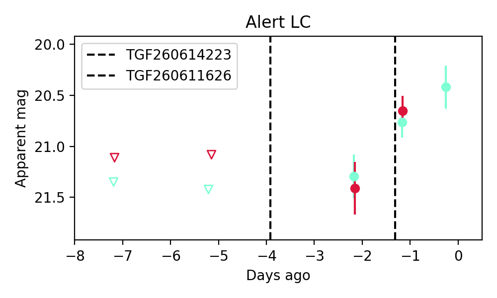
Consistent with synchrotron, g-r>0!
16. ZTF26abbzilh (FBOT?) [Back to Top] [Share] [Trigger Swift] [Fritz ] [Lasair ]RA, Dec: 264.4375, 21.11373 17h37m45.00s, 21d 6m49.43sGalactic (l, b): 44.81065, 25.25334 ext(g-r) = 0.097peak abs mag = -20.47 LegacySurvey: 1 sources in 3 arcsec Closest: d = 0.21 arcsec, 135.5 deg (east of north) photoz=0.57 (68% bounds 0.4, 0.71), type=REX peak abs mag = -22.81 (68% bounds -21.87, -23.38) Consistent with synchrotron, g-r>0!
17. ZTF26abbzvkh (Afterglow?) [Back to Top] [Share] [Trigger Swift] [Fritz ] [Lasair ]RA, Dec: 274.69535, 11.37334 18h18m46.88s, 11d22m24.04sGalactic (l, b): 39.5169, 12.34662 ext(g-r) = 0.169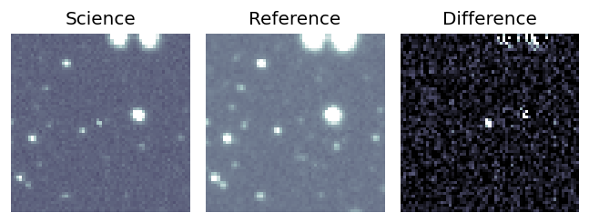
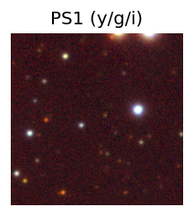
PS1: 1 source in 3 arcsec Closest: d = 2.67 arcsec photoz=0.51+/-0.12 peak abs mag = -23.72 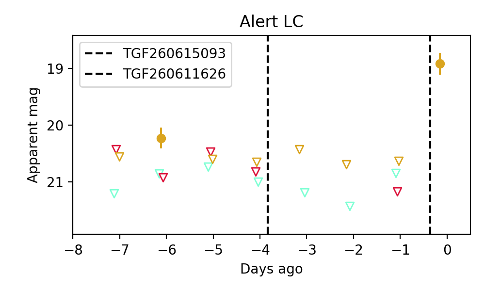